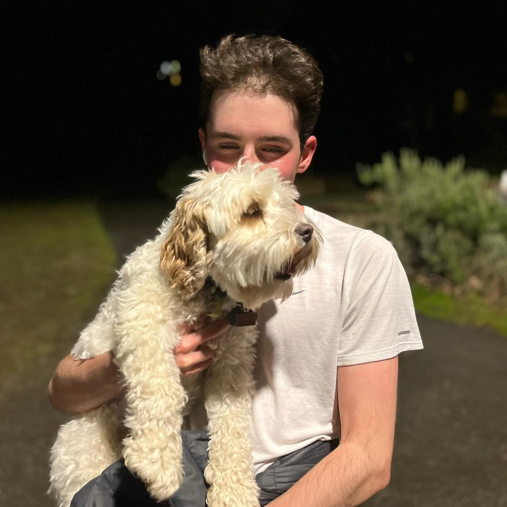
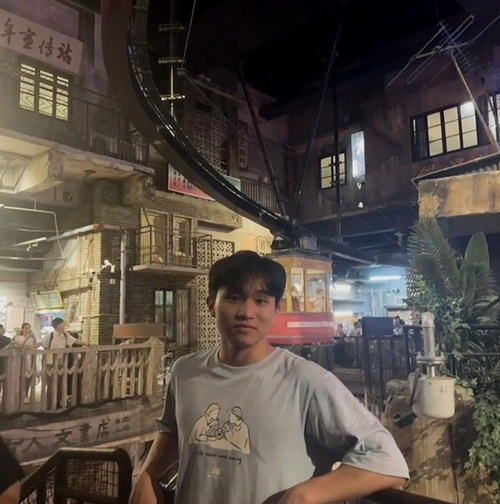

CSE 311: Foundations of Computing I, Spring 2023
Course Staff/Office Hours
In addition to the staff contact information, this page contains the most up-to-date listing of staff office hours (and their location). Office hours are subject to change, but we'll try to keep this page accurate at least a week into the future. Note: AC nth floor = Allen Center Breakout Space on Floor n.
| Monday | Tuesday | Wednesday | Thursday | Friday | |
|---|---|---|---|---|---|
| 9-9:30a | Grace Chen (AC 3rd floor) |
||||
| 9:30-10a | |||||
| 10-10:30a | |||||
| 10:30-11a | |||||
| 11-11:30a | |||||
| 11:30-12p | |||||
| 12-12:30p | |||||
| 12:30-1p | |||||
| 1-1:30p | |||||
| 1:30-2p | |||||
| 2-2:30p | |||||
| 2:30-3p | |||||
| 3-3:30p | |
|
|||
| 3:30-4p | |
|
|
||
| 4-4:30p | |||||
| 4:30-5p | |
||||
| 5-5:30p | |||||
| 5:30-6p |

- Jacob Berg (he/him) (Instructor 12:00 PM - 1:00 PM)
- jacob33 [at] cs.washington.edu
- Office Hours: TBD
- Lecture Section: A (SMI 211)
- Hello, I'm Jacob! I grew up in Seattle and am studying Computer Science with a particular interest in robotics. In my spare time I enjoy playing hockey, going climbing, walking my dog, and playing board games with friends. Looking forward to meeting you all this quarter and super excited to be a summer instructor!
- Timothy Tran (he/him)
- timttran [at] cs.washington.edu
- Section
- Office Hours:
- Hey everyone! 311 is my favorite 300 level class so I'm really excited to be TAing it! Outside of CS, I love to climb and play tennis, so you'll likely either catch me climbing at Crags or playing tennis most days. Feel free to reach out if you wanna talk about academics or literally anything

- Aruna Srivastava (She / Her)
- arunasri [at] cs.washington.edu
- Section
- Office Hours:
- Hey guys! I am a second-year in CS, formerly in Informatics, and I am excited to return to 311! Outside of school, I am usually playing tennis, cooking with friends, or watching F1. Feel free to reach out about applying in-house to Info or CS or anything else.

- Robert Stevens (He / Him)
- rsteve2 [at] cs.washington.edu
- Section
- Office Hours:
- Hi, I'm Robert! I'm a junior in CS and math and I'm excited to be TAing 311 for my 2nd quarter. I'm interested in algorithms, probability, and analysis. Feel free to ask me anything about math, hiking, video games, or being a transfer student!

- Raymond Yu (He / Him)
- ryu5 [at] cs.washington.edu
- Section
- Office Hours:
- Hi, I'm Raymond! I'm a sophomore in CS. I'm interested in robotics, reinforcement learning, and computer vision. I'm excited to TA for 311 for the first time and looking forward to meeting you all! Outside of school, I pretend to do sports, eat lots of food, and go on grocery runs to get more food.
- Andre Ye (He / Him)
- andreye [at] cs.washington.edu
- Section
- Office Hours:
- Hey! I'm a junior in philosophy and CS; my research is in HCI/HAI with a little bit of computer vision. CSE 311 is cool af so I hope we can have fun together!
- Cade Dillon
- caded19 [at] cs.washington.edu
- Section
- Office Hours:
- TBD